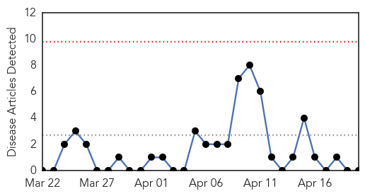
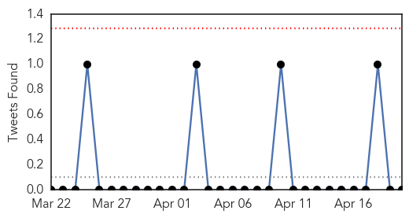
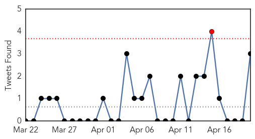

Swine Flu
30-Day Web Trend
0 alerts, 0 warnings

30-Day Twitter Trend
0 alerts, 0 warnings

Article Locations


Article Confidences

Top Articles:
-
No articles found for Apr 20, 2014
Top Tweets:
-
No tweets found for Apr 20, 2014
Unknown
30-Day Web Trend
0 alerts, 0 warnings

30-Day Twitter Trend
1 alerts, 0 warnings

Article Locations


Article Confidences

Top Articles:
- 0.998
- Cases of deadly MERS virus spike in Saudi Arabia — RT News
- 0.955
- Second MERS Test on Filipino Nurse Is Negative, Officials Say
- 0.935
- Virus that kills newborn pigs spreads to Ohio hog farms
- 0.921
- Geography in the News: Polio Returns with Tenacity
- 0.866
- Ukraine separatists say in touch with OSCE mediators
- 0.866
- Ukraine nationalists deny role in east Ukraine clash, blame Russia
- 0.810
- Are More Dogs Becoming Infected?
- 0.799
- The Voice of Russia: News, Breaking news, Politics, Economics, Business, Russia, International current events, Expert opinion, podcasts, Video
- 0.681
- Bad News Is Good News For Familial Amyloid Polyneuropathy
- 0.655
- Diarrhoea cases on the rise
Top Tweets:
- 0.632
- Minister of Health: Total confirmed MERS cases reaches 244 case 64 in Jeddah. Total samples screened so far around 20k.
- 0.593
- “@WHO: On 18 April 2014 the Ministry of Health of Greece reported one laboratory-confirmed case of infection with MERS”
- 0.523
- “@WHO: While in Jeddah the patient consulted a hospital repeatedly on 8 and 10 April for a febrile illness with diarrhoea. MERS KSA